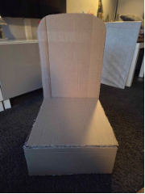
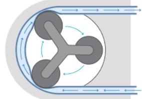
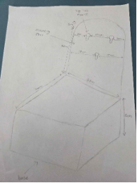
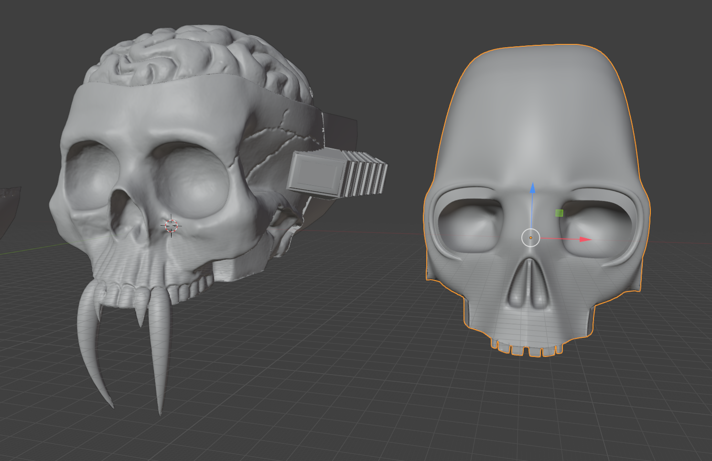

Product Development
Concept
Once the group had agreed on a general concept for the artefact, the method of mounting and support needed to be carefully considered. This led to an extended discussion, as some members preferred fixing the dispenser to a back panel, while others felt a freestanding stand would be more effective. In the end, a hybrid approach combining both methods was adopted to provide stability and practicality.

The initial drawings included a relatively large base designed to store the soap supply used by the dispenser, along with space for additional refill storage. Although this offered practical benefits, the overall size was too large to realistically fit on a standard sink area, making it impractical for everyday use.
As part of the functional development, the group also considered how the soap would be dispensed. A key requirement was that the system should ideally be hands-free to improve hygiene and user experience. This led to discussions around using a sensor-based mechanism, such as infrared or ultrasonic detection, or a pressure-activated system to trigger the pump without direct contact. These ideas were evaluated in terms of reliability, complexity, and ease of integration into the design. For this project, the ultrasonic sensors were selected for their ease of use.
Alongside this, different pump mechanisms were also explored. The group considered simple manual pumps, spring-loaded systems, and small motor-driven peristaltic pumps. Each option was assessed based on cost, space requirements, and how effectively it could be concealed within the Alien-skull design. Ultimately, the chosen method was the peristaltic pump since this offered the best balance of functionality and aesthetic integration.


A mechanical system for the jaw and tongue would use components such as levers, linkages, springs, or cams, offering a simpler and more reliable solution that is easier to construct and less dependent on power or programming. However, it would likely provide less precise control over movement and could be challenging to fit neatly within the limited internal space of the Alien-skull design. In contrast, an electronic system using servos, motors, or linear actuators controlled by a microcontroller would allow for smoother, more accurate, and potentially synchronised movements, improving the realism of the mechanism. By using a combination of both methods, an accurate yet reliable solution could be achieved. This mechanism would use a mechanical actuator to map the jaw rotation to the tongue extension and a motor to drive the rotation of the jaw.
Following these considerations, the group moved away from the initial large-scale concept drawings and began developing a scaled physical model. This allowed the design to be better understood in terms of real-world proportions and helped identify potential issues earlier in the development process before progressing to a final prototype. (Blender Foundation, 2025)

Prototyping
2D Design

The initial drawings played an important role in establishing the overall form, proportions, and aesthetic direction of the alien-skull themed soap dispenser. Early sketches focused on defining key features such as the skull shape, jaw position, and general silhouette of the artefact. These drawings also helped determine approximate dimensions, ensuring the design would remain realistic and usable on a standard sink area. Layout planning was used to organise where internal components, such as the soap reservoir and actuation mechanism, would be positioned within the structure. Working in 2D before moving into CAD was beneficial because it allowed ideas to be developed quickly, tested visually, and refined without the time required for detailed digital modelling.
CAD Designs
The CAD development process involved two main software packages: Blender and Fusion 360. The alien-skull base model was first created through 3D scanning and then imported into Blender, where it was cleaned up, modified, and adapted for the project requirements. Blender, supported by a measurement extension, was used to refine the skull geometry, adjust proportions, and modify the jaw and tongue areas so they could accommodate the internal mechanism. This approach allowed the group to use a highly detailed and realistic skull shape while still being able to customise it for functionality. (Autodesk, 2025).

Fusion 360 was used separately to design the internal mechanical system responsible for actuating the jaw and tongue movement. This included the development of moving components, mounting points, and the overall layout of the mechanism within the skull structure. The modelling workflow involved repeatedly testing how the scanned skull and mechanical components would fit together, leading to several iterative revisions throughout development.“Iterative design is widely used in engineering development (Cross, 2011).”(Autodesk, 2025)

Scaling issues became an important consideration, as the scanned skull model and the mechanism created in Fusion 360 needed to match accurately in size and proportion. Tolerances also had to be considered carefully to ensure moving parts would function correctly once manufactured, particularly due to the inaccuracies that can occur during 3D printing. In addition, the final model was divided into multiple sections to fit within the limitations of the available 3D printer build volume and to make assembly easier during prototyping.
Physical Prototyping
3D Printing
The initial 3D printing stage revealed several issues with the prototype models. A number of prints failed due to poor geometry within some of the CAD files, which created problems during slicing and caused unstable sections during printing. Scaling issues also became apparent, as the original alien-skull model was significantly larger than the available printer build volume. This meant the design had to be divided into multiple separate sections before printing could begin. Support generation also caused difficulties, particularly around complex curved surfaces and overhanging areas of the skull and jaw, resulting in rough surface finishes and increased post-processing requirements. In addition, the available printer had limited build capacity, which restricted the overall size and quality of the prototype components.
Following the issues identified during the initial printing stage, several revisions were made to improve manufacturability. Access to a larger 3D printer allowed larger sections of the model to be produced with fewer joins, improving structural consistency and reducing assembly complexity. The model was also redesigned into more manageable separated sections, allowing components to be printed more reliably and efficiently. Tolerances between moving parts and assembly sections were adjusted to improve fit and reduce friction during operation. These revisions resulted in a more practical and manufacturable prototype compared to the original print attempts.(Gibson et al., 2015)
The prototype was printed using PLA filament, primarily because it was the only material readily available for use during the project. While PLA was suitable for rapid prototyping due to its ease of printing and low cost, polypropylene (PP) would likely have been a more appropriate material for a final functional product because of its improved durability, flexibility, and resistance to moisture and chemicals commonly found in bathroom environments.
Construction
Wood was selected as the primary material for the base because it was inexpensive, easy to manufacture, and provided sufficient strength and stability for supporting the prototype. It also allowed modifications to be made quickly using standard workshop tools, making it suitable for a prototype environment. Although laser cutting was considered as a manufacturing method due to its accuracy and cleaner finish, it was ultimately rejected because of time and budget limitations. Producing the components through laser cutting would have increased manufacturing costs and required additional setup time that was not available within the project schedule.
Prototype Evaluation
Although the prototype remained incomplete, it was still possible to evaluate several aspects of the design. Structurally, the artefact demonstrated sufficient integrity to support its main components and validate the overall assembly approach. The design also showed practicality in terms of layout and mechanism integration, despite some unfinished functional elements. Visually, the alien-skull appearance successfully achieved the intended aesthetic and demonstrated the effectiveness of combining detailed organic forms with mechanical components. From a manufacturing perspective, the project highlighted both the strengths and limitations of the chosen prototyping methods, identifying areas where tolerances, material selection, and assembly techniques could be improved in future development.
Simulation

A digital simulation was developed to demonstrate the intended mechanical functionality of the design. The simulation was used to showcase the movement of the jaw and tongue actuation system, allowing the group to present how the mechanism would operate within the completed alien-skull soap dispenser. This approach provided a practical alternative to a fully assembled prototype, as it allowed the key mechanical concepts and movement sequences to be tested and visualised without requiring final physical manufacture. The simulation also demonstrated the integration between the structural design and the internal mechanism, helping validate the overall functionality of the project despite the incomplete physical artefact.